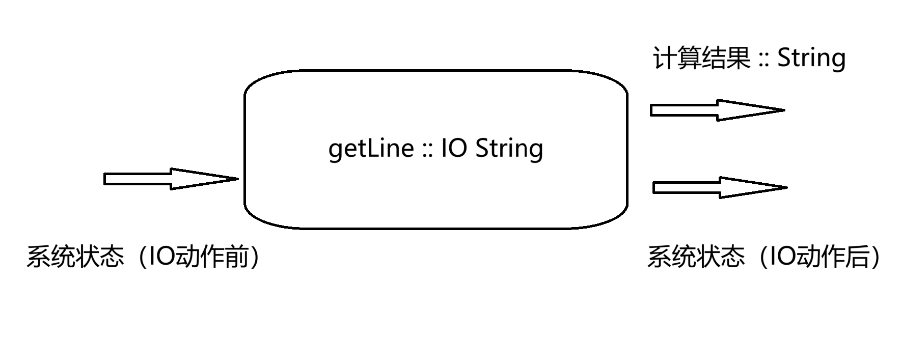
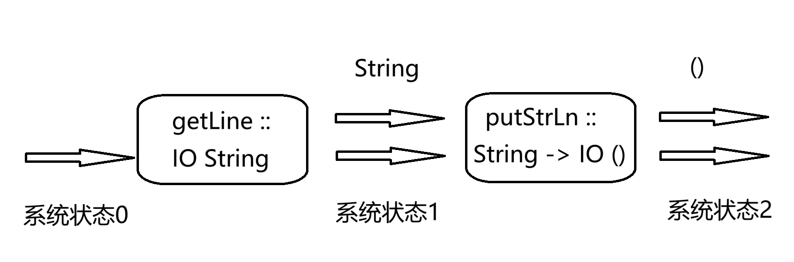

Monad专题
在函子专题中已经简要介绍了Monad类型类的定义与用法。本章将针对Monad展开，讲解有关Monad更多有关特性与用法。
Monad介绍
在Haskell中，monad经常被认为是计算的抽象描述符,本质上这些描述符可以进行组合，使用较小的表达式构建更大的表达式[1]。Monad可以作为各种数据或控制结构的标准编程接口[2]。
补充： 这里的表达式有时也被称为“动作”(actions)
monad具有三个属性，这些属性使其非常高效有用：
模块化： monad允许计算由更简单的计算组合而合成，并将组合策略与正在执行的实际计算分开。
灵活性： monad使得其函数式程序相比等价的不适用单子书写的程序更具有适应性。monad将计算策略集中到一个位置，而无需分散在整个程序中。
隔离性：monad可以用于创建命令式计算结构，这些结构与程序主体保持安全的隔离。[2]
Monad类型类定义如下：
class Applicative m => Monad m where
(>>=) :: m a -> (a -> m b) -> m b
(>>) :: m a -> m b -> m b
return :: a -> m a
fail :: String -> m a
{-# MINIMAL (>>=) #-}
通过定义，我们知道一个monad前提必须是一个应用函子，然而仅仅实现了某个类型的单子类型类的实例并不能保证其为真正monad。在此基础上，还应当满足以下单子律：
左单位元：
return a >>= k = k a右单位元：
m >>= return = m结合律：
m >>= (\x -> k x >>= h) = (m >>= k) >>= h
常见的 monad
下面依次介绍几个Haskell内置的 monad，并验证其确实满足单子律。
Identity monad
Identity monad 作为最简单的具有单子性质的类型，它仅仅定义了一个容器，以容纳某个类型的值。其定义如下：
newtype Identity a = Idnetity {runIdentity :: a}
instance Monad Identity where
Identity m >>= k = k m
提示：
Identity可从Control.Monad.Identity导入，或者从定义处Data.Functor.Identity导入
下面证明其满足单子律。
对于左单位元，有：
左边 = return a >>= k
= Identity a >>= k
= k a = 右边
对于右单位元，令m = Identity a：
左边 = m >>= return
= Identity a >>= return
= return a
= Identity a = m = 右边
对于结合律，仍然令m = Identity a:
左边 = m >>= (\x -> k x >>= h)
= Identity a >>= (\x -> k x >>= h)
= k a >>= h
= (Identity a >>= k) >>= h
= (m >>= k) >>= h = 右边
因此，Identity满足单子律。
Maybe monad
Maybe monad定义如下：
instance Monad Maybe where
Nothing >>= _ = Nothing
(Just a) >>= f = f a
下面我们来验证其满足单子律。
对于左单位元，要证return a >>= k = k a，其中k的类型为a -> Maybe b。
左边 = return a >>= k
= Just a >>= k
= k a = 右边
对于右单位元，要证m >>= return = m，其中m的类型为Maybe a。
当 m = Nothing 时：
左边 = m >>= return
= Nothing >>= return
= Nothing = m = 右边
当 m = Just a 时：
左边 = m >>= return
= Just a >>= return
= return a
= Just a = m = 右边
对于结合律，要证m >>= (\x -> k x >>= h) = (m >>= k) >>= h，其中m的类型为Maybe a,k的类型为a -> Maybe b,h的类型为b -> Maybe c。
当 m = Nothing 时：
左边 = m >>= (\x -> k x >>= h)
= Nothing >>= (\x -> k x >>= h)
= Nothing
= Nothing >>= h
= (Nothing >>= k) >>= h
= (m >>= k) >>= h
= 右边
当 m = Just a 时：
左边 = m >>= (\x -> k x >>= h)
= Just a >>= (\x -> k x >>= h)
= k a >>= h
= (Just a >>= k) >>= h
= (m >>= k) >>= h
= 右边
综上，Maybe满足成为monad的条件。
最后，我们给出一个示例：假设我们拥有若干字符串，我们首先需要将其合并后，并计算其中非字母字符的数量。
-- code'2.hs
import Data.Char(isAlpha)
string1 = Just "My name is "
string2 = Just "L fried."
-- just joking (Alfred)
string3 = Just "The textbook seems a mess 2 readers !"
maybeMonadDemo :: Maybe Int
maybeMonadDemo =
string1 >>= \x ->
(x ++) <$> string2 >>=
\y ->
(y ++) <$> string3 >>=
\z ->
Just ( foldr (+) 0 (((\x -> if x then 0 else 1) . isAlpha) <$> z))
-- 等效于
maybeMonadDemo' :: Maybe Int
maybeMonadDemo' =
string1 >>= \x ->
string2 >>= (
\y ->
string3 >>= (
\z ->
Just ( foldr (+) 0 (((\x -> if x then 0 else 1) . isAlpha) <$> z))) . (y ++)) . (x ++)
尝试在GHCi中运行查看结果：
Prelude> :load code'2.hs
[1 of 1] Compiling Main ( code'2.hs, interpreted )
Ok, one module loaded.
Prelude> maybeMonadDemo
Just 14
List monad
List monad 定义如下：
instance Monad [] where
xs >>= f = concatMap f xs
其中concatMap函数类型为Foldable t => (a -> [b]) -> t a -> [b]，当xs有多于一个元素时，该函数会将f对每个元素映射的结果进行拼接。
下面我们来验证其满足单子律。
对于左单位元，要证return a >>= k = k a，其中k的类型为a -> [b]。
左边 = return a >>= k
= [a] >>= k
= k a = 右边
对于右单位元，要证m >>= return = m，其中m的类型为[a]。
当 m = [] 时
左边 = m >>= return
= concatMap return m
= concatMap return []
= [] = m = 右边
当 m = (x:xs) 时，假设对于xs，右单位元成立，即`m1 >>= return = concatMap return xs = m1`成立
左边 = m >>= return
= concatMap return m
= concatMap return (x:xs)
= return x ++ concatMap return xs
= [x] ++ concatMap return xs
= [x] ++ (m1 >>= return)
= [x] ++ xs -- 根据归纳假设
= x:xs = m = 右边
对于结合律，要证m >>= (\x -> k x >>= h) = (m >>= k) >>= h，其中m的类型为[a]，k的类型为a -> [b]，h的类型为b -> [c]。
当 m = [] 时
左边 = m >>= (\x -> k x >>= h)
= concatMap (\x -> k x >>= h) m
= concatMap (\x -> k x >>= h) []
= []
= [] >>= h
= ([] >>= k) >>= h
= (m >>= k) >>= h = 右边
当 m = (x:xs) 时，假设结合律对xs成立，即`xs >>= (\x -> k x >>= h) = (m1 >>= k) >>= h`成立
左边 = m >>= (\x -> k x >>= h)
= concatMap (\x -> k x >>= h) m
= concatMap (\x -> k x >>= h) (x:xs)
= (k x >>= h) ++ (concatMap (\x -> k x >>= h) xs)
= (k x >>= h) ++ (xs >>= (\x -> k x >>= h))
= (k x >>= h) ++ ((m1 >>= k) >>= h)
= (([x] >>= k) >>= h) ++ ((m1 >>= k) >>= h)
= concatMap h ([x] >>= k) ++ concatMap h (m1 >>= k)
= concatMap h (([x] >>= k) ++ (m1 >>= k)) -- 分配律
= concatMap h ((concatMap k [x]) ++ (concatMap k xs))
= concatMap h (concatMap k ([x] ++ xs)) -- 分配律
= concatMap h (concatMap k (x:xs))
= concatMap h (m >>= k)
= (m >>= k) >>= h = 右边
这里需要证明的一点是concatMap _和++是满足分配律的，即concatMap f l1 ++ concatMap f l2 = concatMap f (l1 ++ l2)成立。
当 l1 = [] 时
concatMap f l1 ++ concatMap f l2
= concatMap f [] ++ concatMap f l2
= [] ++ concatMap f l2
= concatMap f l2
= concatMap f ([] ++ l2)
= concatMap f (l1 ++ l2)
当 l1 == (x:xs) 时，假设分配律对长度不大于xs的列表均成立
concatMap f l1 ++ concatMap f l2
= concatMap f (x:xs) ++ concatMap f l2
= concatMap f (x:xs) ++ concatMap f l2
= concatMap f [x] ++ concatMap f xs ++ concatMap f l2 -- 归纳假设
= concatMap f [x] ++ (concatMap f xs ++ conacatMap f l2) -- 结合律 (列表满足半群结构，其中二元运算为拼接操作)
= concatMap f [x] ++ concatMap f (xs ++ l2)
= concatMap f ([x] ++ xs ++ l2) -- 归纳假设
= concatMap f ((x:xs) ++ l2) -- 结合律
= concatMap f (l1 ++ l2)
综上，列表满足成为monad条件。
更多 monad
接下来我们了解更多的monad，我们将侧重点放在这些monad的功能和使用上。
do-标记
do-标记是用于构建单子运算的快速记法，任何单子的实例都可以使用do-标记。通过使用do-标记可以使得程序模拟带有命名变量的命令式程序进行单子计算[3]。
do-标记使用do关键字开头，并允许在过程中使用<-符号将monad“赋值”（或使用let ... = ...进行一般的赋值），最终以一个单子表达式结束。
回顾前面的Maybe monad中的示例，maybeMonadDemo和等效的maybeMonadDemo'看起来都比较抽象而难以理解，使用do-标记可以使其更简洁和方便。
-- code'2.hs
maybeMonadDoDemo :: Maybe Int
maybeMonadDoDemo =
do
x <- string1
y <- string2
z <- string3
return (foldr (+) 0 (((\x -> if x then 0 else 1) . isAlpha) <$> x ++ y ++ z))
-- 等效于
maybeMonadDoDemo' :: Maybe Int
maybeMonadDoDemo' =
do { x <- string1;
y <- string2;
z <- string3;
return (foldr (+) 0 (((\x -> if x then 0 else 1) . isAlpha) <$> x ++ y ++ z))
}
实际上，do-标记只是一种语法糖，在使用maybeMonadDoDemo与maybeMonadDemo和maybeMonadDemo'是完全等效的。
注意：应当区分Haskell中的
return函数与其在其他语言中的区别，在Haskell中return是一个函数，其本质上是将值封装为monad;而一般语言中的return则直接用于表示函数的返回值
一般地，对于do-标记中的每一行，都有如下大致的转换过程[3]：
x <- monad 表达式
...
-- 转换后
monad 表达式 >>= (\x -> ...)
monad 表达式
...
-- 转换后
monad 表达式 >>= (\_ -> ...)
let x = 表达式
...
-- 转换后
let x = 表达式 in ...
IO monad
IO monad 用于控制程序的输入输出，对于Haskell这种纯函数式语言来说，IO操作与其 引用透明(referntial transparency) 和 无副作用(side-effect free) 的特性相违背。通过使用IO monad 可以将有副作用的IO操作限制在IO monad中，从而保证了Haskell的纯度不会被破坏。
补充：对于纯函数而言，一旦参数确定，那么结果就唯一确定，因此在任何时候对于纯函数的调用都可以被替换为计算结果，这种特性就是引用透明。
提示：本节主要对
IOmonad 作为单子的用法进行一些简要的介绍，侧重点在 monad 而非对IO操作的处理，更多内容读者可以移步 IO 专题
在此之前，我们已经了解了putStrLn函数用于输出字符串，下面我们将结合getLine这一输入函数讲解IO monad的使用方法。
getLine函数的类型为IO String，即进行输入IO操作后返回一个String类型的值；对比之下putStrLn函数类型为String -> IO ()，接受字符串后进行输出操作，但不返回任何值。

注意：这里的“返回”指
IOmonad中封装的类型或者说传递给其他monad的数据的类型。因为对于a >>= b这种表达式，a计算后的值会传递给b，这有点类似“返回”这一行为；另外，IO ()并非不传递任何值，()类型本身拥有唯一的值()，因此当我们尝试对IO ()进行传值时，我们会得到一个()。
一个最简单的应用场景就是先从键盘获取输入后，将输入值进行输出。
Prelude> getLine >>= putStrLn
hello
hello
Prelude> :{
Prelude| do
Prelude| input <- getLine
Prelude| putStrLn input
Prelude| :}
hello
hello
整个过程示意图如下：

getLine先通过键盘读取一行字符串，并返回一个String类型，这个返回的数据被传入putStrLn函数作为参数，之后putStrLn将这个字符串输出[4]。
State monad
在纯函数式语言中，我们无法进行有状态的计算，一种常见的模拟有状态计算的方法是使用State monad，将一个状态参数“贯穿”一系列函数[3]。
State monad定义如下：
-- code'2.hs
{-# LANGUAGE DeriveFunctor #-}
{-# LANGUAGE TupleSections #-}
newtype State s a = State {runState :: s -> (a, s)} deriving (Functor)
instance Applicative (State s) where
pure x = State (x,)
State f <*> State x = State $ \s -> (fst (f s) (fst (x s)),snd (x s))
instance Monad (State s) where
State x >>= f = State $ \s -> let (v,s') = x s in runState (f v) s'
注意： 这里的
Statemonad定义为简化版的定义，实际的State类型是StateT类型部分参数实例化的别名，类似地，也没有对于State的单子实例声明，而是针对StateT的实例声明。类型StateT位于Control.Monad.State.Lazy中[3]，读者可以自行参考。这里使用简化版本并不影响读者对该monad的理解和使用。
我们有evalState和execState分别用于获取最终结果和最终状态（可以在库中找到，下同）,定义如下：
-- code'2.hs
evalState :: State s a -> s -> a
evalState act = fst . runState act
execState :: State s a -> s -> s
execState act = snd . runState act
我们还可以为State单子提供一个标准而简单的接口–MonadState类型类，其定义如下：
-- code'2.hs
{-# LANGUAGE FunctionalDependencies #-}
{-# LANGUAGE FlexibleInstances #-}
class MonadState s m | m -> s where
get :: m s
get = state (\s -> (s,s))
put :: s -> m ()
put s = state (\_ -> ((),s))
state :: (s -> (a, s)) -> m a
state f = do
s <- get
let (a, s') = f s
put s'
return a
{-# MINIMAL state | get, put #-}
instance MonadState s (State s) where
get = State $ \s -> (s,s)
put s = State $ \_ -> ((),s)
其中get函数检索状态并将其作为值复制一份；put函数只设定状态但不生成值，state函数则是对原来的状态和结果进行更新。
下面我们尝试应用State monad实现一个栈结构，一个栈结构需要压入栈(push)、弹出栈(pop)以及查看栈顶(peek)三种操作。
首先实现栈数据结构，我们使用列表进行存储。
-- code'2.hs
type Stack = [Int]
对于入栈，应当接受一个Int参数，并改变栈的状态，如下：
-- code'2.hs
push :: Int -> State Stack ()
push x = state $ \xs -> ((),x : xs)
对于出栈，应当改变栈的状态，将栈顶元素弹出并作为最终结果，如下：
-- code'2.hs
pop :: State Stack Int
pop = state $ \(x:xs) -> (x, xs)
最后，观察函数不改变状态，但将栈顶元素作为最终结果，如下：
-- code'2.hs
peek :: State Stack Int
peek = state $ \(x:xs) -> (x, x:xs)
下面尝试测试这些栈活动，例如可以使用栈进行加法运算1 + 2:
-- code'2.hs
makestack :: State Stack ()
makestack = do
push 1
push 2
add :: State Stack ()
add = do
a <- pop
b <- pop
let c = a + b
push c
makestack将两个数字压入栈中，add将两个数字弹出栈，并将计算结果重新压入栈中。
Prelude> evalState (makestack >> add >> peek) []
3
Reader monad
当我们需要从一个共享环境中读取信息并进行计算时，但不需要改变环境的状态时，就可以使用Reader monad。Reader monad可以在这种特定的场景下替代State monad，以便表达更清晰容易[3]。
Reader monad 定义如下（同样，这也是简化后的版本）：
-- code'2.hs
newtype Reader e a = Reader {runReader :: e -> a} deriving (Functor)
instance Applicative (Reader e) where
pure a = Reader $ \e -> a
Reader f <*> Reader x = Reader $ \e -> f e (x e)
instance Monad (Reader e) where
(Reader r) >>= f = Reader $ \e -> runReader (f (r e)) e
类似MonadState，我们也可以写一个MonadReader提供一些基础的函数。
-- code'2.hs
class Monad m => MonadReader e m | m -> e where
ask :: m e
ask = reader id
local :: (e -> e) -> m a -> m a
reader :: (e -> a) -> m a
reader f = do
r <- ask
return (f r)
instance MonadReader e (Reader e) where
local f c = Reader $ \e -> runReader c (f e)
其中ask函数用于读取当前环境，local函数进行环境的局部修改（即不会影响到全局环境）。
由于Reader中并没有保存有关环境的信息（相比之下State中将s存储在元组中），因此local只是局部有效。
Writer monad
Writer monad 在计算的同时还生成输出，例如日志记录和跟踪。这些输出不是计算的主要结果，但是必要保留的信息，通过使用Writer monad可以更简洁地管理输出，不会使主要地计算变得混乱[3]。
Writer monad 的（简化后的）定义如下:
-- code'2.hs
newtype Writer w a = Writer {runWriter :: (a,w) } deriving (Functor)
instance Monoid w => Applicative (Writer w) where
pure x = Writer (x,mempty)
Writer (fa,w') <*> Writer (a,w) = Writer (fa a,w' `mappend` w)
instance Monoid w => Monad (Writer w) where
Writer (a,w) >>= f = let (a',w') = runWriter (f a) in
Writer (a', w `mappend` w')
类似地，我们可以写一个MonadWriter类型类，提供一些基础函数。
-- code'2.hs
class (Monoid w, Monad m) => MonadWriter w m | m -> w where
pass :: m (a, w -> w) -> m a
listen :: m a -> m (a,w)
tell :: w -> m ()
tell w = writer ((),w)
writer :: (a,w) -> m a
writer (a, w) = do
tell w
return a
{-# MINIMAL (writer | tell), listen, pass #-}
instance Monoid w => MonadWriter w (Writer w) where
pass (Writer ((a,f),w)) = Writer (a,f w)
listen (Writer (a,w)) = Writer ((a,w),w)
tell s = Writer ((),s)
tell函数单纯产生一个输出；listen函数将Writer中的输出w作为值的一部分，连同原来的值一起形成新的值（元组）(a,w)，这允许计算能够“听到”输出的内容；pass函数将值中函数f移除，并作用在输出中。
一般情况下，pass会有些麻烦，因为f位于值中，通常我们使用一个类似的函数censor，该函数将f作为一个参数吸收进来，并生成为pass函数可以处理的结构。
-- code'2.hs
censor :: (MonadWriter w m) => (w -> w) -> m a -> m a
censor f m = pass $ do
a <- m
return (a, f)
另一个常用的函数是listens,它可以看作listen函数的升级版, 提供对输出进行处理的功能。
-- code'2.hs
listens :: (MonadWriter w m) => (w -> b) -> m a -> m (a,b)
listens f m = do
(a,w) <- listen m
return (a,f w)
增强Monad MonadPlus
MonadPlus可以认为是Monad的增强版，其定义的是满足幺半群的单子类型类，定义如下：
class (Monad m,Alternative m) => MonadPlus (m :: * -> *) where
mzero :: m a
mplus :: m a -> m a -> m a
例如前面的MonadWriter 实例就可以使用MonadPlus约束替换。
monad 转换器
monad 转换器(Monad Transformer) 将不同的monad组合起来，使其同时具备多种monad的行为。monad 转换器通过将原始monad构造函数中添加monad参数，以生成新的构造函数，从而得到组合的单子类型[3]。
IdentityT monad 转换器
我们首先介绍最简单的转换器以便读者能够有一个简单的认识，IdentityT 是 Identity 的转换器，其原理为添加了容纳单子参数的m，如下：
-- code'2.hs
newtype IdentityT m a = IdentityT { runIdentityT :: m a } deriving (Functor)
我们为其声明单子实例：
-- code'2.hs
instance Applicative m => Applicative (IdentityT m) where
pure a = IdentityT $ pure a
IdentityT mf <*> IdentityT ma = IdentityT (mf <*> ma)
instance Monad m => Monad (IdentityT m) where
m >>= k = IdentityT $ do
a <- runIdentityT m
runIdentityT (k a)
至此我们可以将IdnetityT与其他monad组合，例如Maybe monad。
-- code'2.hs
type IdentityMaybe a = IdentityT Maybe a
我们沿用Maybe monad中的示例，演示如何使用IdentityT monad转换器。
-- code'2.hs
string1' = IdentityT string1
string2' = IdentityT string2
string3' = IdentityT string3
identityMaybeMonadTDemo :: IdentityMaybe Int
identityMaybeMonadTDemo =
do
x <- string1'
y <- string2'
z <- string3'
return (foldr (+) 0 (((\x -> if x then 0 else 1) . isAlpha) <$> x ++ y ++ z))
monad 提升 MonadTrans
Haskell中有很多monad 转换器，它们可以归纳出共同的性质，这些性质被封装到了MonadTrans类型类中，该类型类位于Control.Monad.Trans。
MonadTrans定义如下：
-- code'2.hs
class MonadTrans t where
lift :: Monad m => m a -> t m a
其中lift意为“提升函数”，它可以将某个monad提升为与某个转换器的组合。
例如前面的IdentityT转换器：
-- code'2.hs
instance MonadTrans IdentityT where
lift m = IdentityT m
因此，前面的示例可以写成：
-- code'2.hs
identityMaybeMoandTDemo' :: IdentityMaybe Int
identityMaybeMoandTDemo' =
do
x <- lift string1
y <- lift string2
z <- lift string3
return (foldr (+) 0 (((\x -> if x then 0 else 1) . isAlpha) <$> x ++ y ++ z))
lift函数允许我们仅仅定义原始monad值，并自动转换为带有转换器的组合monad类型。
lift 定律
lift函数应当人为保证满足以下定律：
lift . return = returnlift (m >>= f) = lift m >>= (lift . f)
IO monad 提升 MonadIO
由于我们并没有IO monad的转换器，因此当组合的monad行为中需要IO操作时，IO monad往往作为其他转换器的参数，当然也就无法使用MonadTrans类型类。
Haskell中提供了一个MonadIO用于将IO操作提升的函数liftIO，具体定义如下：
class Monad m => MonadIO m where
liftIO :: IO a -> m a
{-# MINIMAL liftIO #-}
该定义位于Control.Monad.IO.Class，一旦我们拥有MonadIO实现的转换器（或者说组合monad），就可以将其IO操作提升至该monad。
例如最简单的转换器IdentityT。
-- code'2.hs
import Control.Monad.IO.Class
instance MonadIO m => MonadIO (IdentityT m) where
liftIO = IdentityT . liftIO
提示：实际上，该实例已经在
Control.Monad.Trans.Identity中定义
模仿前面的示例，但改为读取三行字符串，并计算其中非字母的字符数。
-- code'2.hs
identityIOMonadTDemo :: IdentityT IO Int
identityIOMonadTDemo =
do
x <- liftIO getLine
y <- liftIO getLine
z <- liftIO getLine
return (foldr (+) 0 (((\x -> if x then 0 else 1) . isAlpha) <$> x ++ y ++ z))
多次 monad 提升
类似IO这类无法实现转换器的monad有很多，因此一种比较好的方法是将这类monad的性质抽象出来。MonadBase位于transformers-base库的Control.Monad.Base，其内含有函数liftBase，能够一次性将monad提升到顶层，而无需多次使用lift函数[5]。
class (Applicative b,Applicative m, Monad b,Monad m) => MonadBase b m | m -> b where
liftBase :: b α -> m α
{-# MINIMAL liftBase #-}
Haskell提供了提升的默认递归实现liftBaseDefault，即
-- code'2.hs
import Control.Monad.Base(MonadBase,liftBase)
liftBaseDefault :: (MonadTrans t, MonadBase b m) => b α -> t m α
liftBaseDefault = lift . liftBase
instance (MonadTrans t,MonadBase b m,Monad (t m)) => MonadBase b (t m) where
liftBase = liftBaseDefault
注意：使用这种递归必须保证递归的基本情况的实例已经被声明，Haskell已经内置了一些实例，如
MonadBase IO IO等，读者可以自行查阅
使用IdentityT嵌套转换器，并使用liftBase提升至顶层：
-- code'2.hs
liftBaseDemo :: IdentityT (IdentityT IO) Int
liftBaseDemo =
do
x <- liftBase getLine
y <- liftBase getLine
z <- liftBase getLine
return (foldr (+) 0 (((\x -> if x then 0 else 1) . isAlpha) <$> x ++ y ++ z))
getLine类型为IO String，根据前面声明的实例，liftBase函数将IO String先提升为IdentityT IO String，然后又提升为 IdentityT (IdentityT IO) String，使其能够在do标记的语法块中进行运算。
更多 monad 转换器
下面列出一些内置的标准monad转换器版本：
| 原始单子 | 原始类型 | 转换器版本 | 组合类型 | 位置 |
|---|---|---|---|---|
| Maybe | Maybe a | MaybeT | MaybeT (m (Maybe a)) | transformers Control.Monad.Trans.Maybe |
| Either | Either e a | EitherT | m (Either e a) | transformers-either Control.Monad.Trans.Either |
| State | State (s -> (a,s)) | StateT | StateT (s -> m (a, s)) | transformers Control.Monad.Trans.State.Lazy |
| Reader | Reader (e -> a) | ReaderT | ReaderT (r -> m a) | transformers Control.Monad.Trans.State.Lazy |
| Writer | Writer (a, w) | WriterT | WriterT (m (a, w)) | transformers Control.Monad.Trans.Writer.Lazy |
[1] Merely monadic. (2021, March 16). HaskellWiki, . Retrieved 02:27, April 20, 2024 from https://wiki.haskell.org/index.php?title=Merely_monadic&oldid=64044.
[2] Monad. (2022, October 22). HaskellWiki, . Retrieved 02:46, April 20, 2024 from https://wiki.haskell.org/index.php?title=Monad&oldid=65405.
[3] All About Monads. (2021, September 19). HaskellWiki, . Retrieved 03:13, April 22, 2024 from https://wiki.haskell.org/index.php?title=All_About_Monads&oldid=64741.
[4] State Monad. (2018, December 21). HaskellWiki, . Retrieved 06:21, April 22, 2024 from https://wiki.haskell.org/index.php?title=State_Monad&oldid=62675.
[5] New monads/MonadBase. (2006, October 26). HaskellWiki, . Retrieved 06:36, May 2, 2024 from https://wiki.haskell.org/index.php?title=New_monads/MonadBase&oldid=7351.